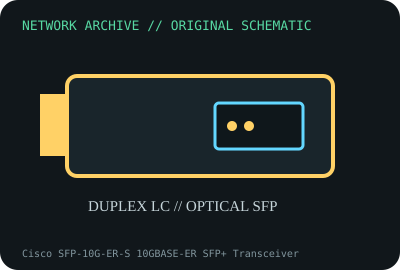

[ MODEL-SPECIFIC NETWORK HARDWARE ]
Cisco SFP-10G-ER-S 10GBASE-ER SFP+ Transceiver
1550nm extended-reach 10GbE optic for engineered single-mode links. Confirm exact product label and revision before applying specifications.

IDENTIFICATION: Confirm manufacturer PID, hardware revision, device ID or module suffix. Nominal standards/link rates are not measurements of payload performance.
Exact specifications and compatibility
| Dedicated subcategory | SFP transceivers: optical and copper |
|---|---|
| Exact product/model | Cisco SFP-10G-ER-S 10GBASE-ER SFP+ Transceiver |
| Bus, ports and physical interface | SFP+ hot-plug module; duplex LC single-mode fiber connector. |
| PHY, radio or protocol | 10GBASE-ER at 1550nm on G.652 SMF; manufacturer specifies up to 40km subject to optical budget and dispersion. |
| Nominal rate (not measured) | 10Gb/s nominal line rate; 40km is a link reach under qualified conditions, not measured throughput. |
| Measured throughput | No measured benchmark is claimed for a physical specimen. A valid result must record host/peer, link partner, media/cable, driver/firmware, traffic pattern, test tool and duration. |
| Drivers, OS and firmware | No client driver. Confirm exact SFP-10G-ER-S support and software/DOM on Cisco host model. |
| Compatibility | Long-reach optic requires link budget assessment; short spans may need attenuator to protect receiver. Use matched ER-compatible far-end module. |
| Variant warning | ER-S is distinct from ER, ER-X and ER-I versions; feature/temp specs and Cisco support vary. Do not infer power/DOM limits from suffix. |
Model and revision notes
ER-S is distinct from ER, ER-X and ER-I versions; feature/temp specs and Cisco support vary. Do not infer power/DOM limits from suffix.
No client driver. Confirm exact SFP-10G-ER-S support and software/DOM on Cisco host model.
Long-reach optic requires link budget assessment; short spans may need attenuator to protect receiver. Use matched ER-compatible far-end module.
Archival, ESD and preservation notes
Record PID, DOM, measured link budget and attenuator if used. Keep caps on; use fiber inspection and laser safety procedures.
Document source URL, access date, document revision and specimen label/condition. Preserve without credentials or private configuration.
Primary manufacturer and standards sources
- Cisco 10GBASE SFP+ modules data sheetPrimary manufacturer or standards documentation; verify exact SKU and host revision.
- Cisco transceiver compatibility matrixPrimary manufacturer or standards documentation; verify exact SKU and host revision.
- IEEE 802.3 Ethernet standardsPrimary manufacturer or standards documentation; verify exact SKU and host revision.
Manufacturer statements cover the named part or its documented product family; the exact labeled revision and vendor compatibility list take precedence.